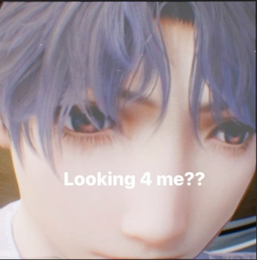

*/23415082600021, 20, Ana Karen Mora Velázquez*/
Estética de la Página Web
Mi Página Estética
Explorando elementos multimedia y tipografías web
Imagen representativa

Audio ambiental
Tu navegador no soporta el elemento de audio.
Video de ejemplo
Tu navegador no soporta el elemento de video.